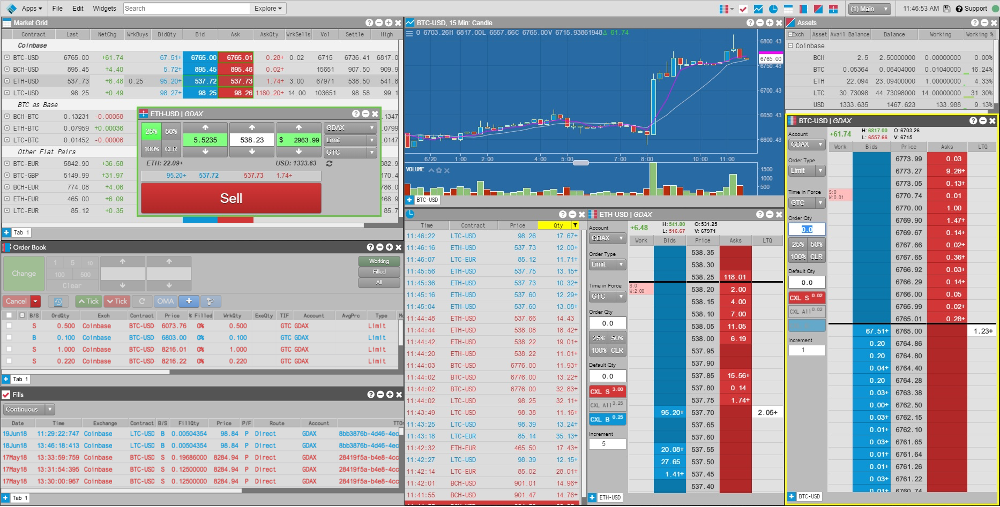
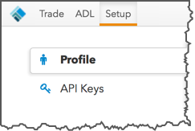
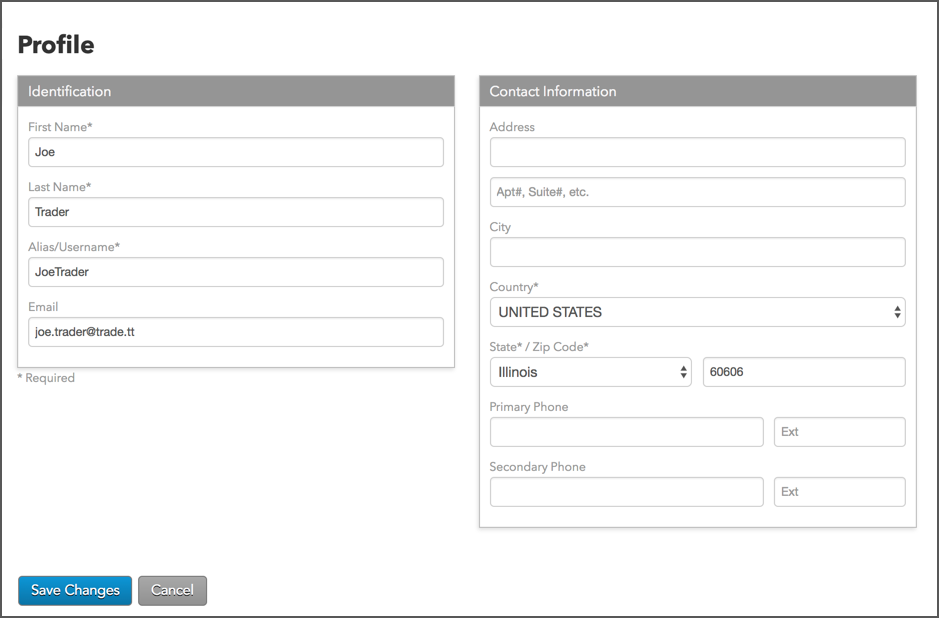
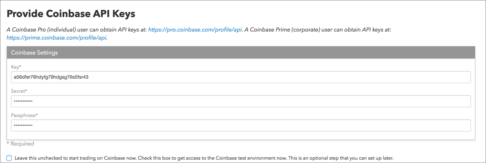
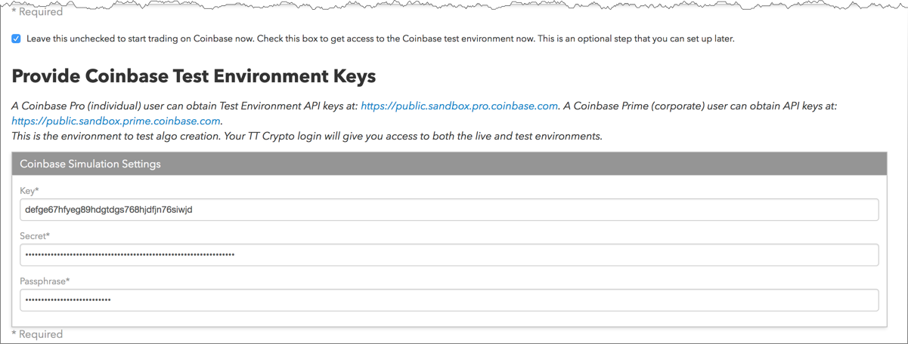
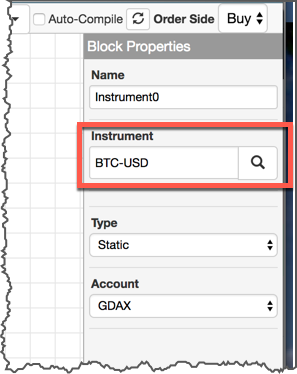

The TT Crypto platform provides you with access to Coinbase to trade a variety of digital currencies like Bitcoin Cash, Bitcoin, Ethereum, and Litecoin on a regulated exchange. When using TT Crypto to trade the spot markets for cryptocurrencies, you have access to many of the of professional trading tools currently available on the TT® platform.

To create a TT Crypto account and begin trading digital currencies via TT, go to crypto.trade.tt.
Before you begin, you'll need to do the following:
After you create a Coinbase account, you'll need to create a TT Crypto account for trading Coinbase on the TT platform. TT Crypto accounts are created at crypto.trade.tt and will only have connectivity to Coinbase.
As part of creating a TT Crypto account, you'll set up a profile and enter your Coinbase API key, API secret, and passphrase required for connecting to Coinbase via crypto.trade.tt.
After creating your account and logging in to crypto.trade.tt, your sample workspace opens and you can begin trading. Use the Apps tab on the menu bar to open ADL to test and deploy your algos, or open Setup to manage your TT Crypto account.
After your TT Crypto account is created, click Setup in the TT menu bar to manage your TT Crypto account profile, and create and manage API keys for Coinbase live and simulated environments using the following tabs:

On the Profile page you can update your TT username/alias and personal contact information.

On the API Keys page, you can modify your existing Coinbase API key, secret, and passphrase. Initially, this page shows the API key, API secret, and passphrase that you entered when you created your TT account for TT Crypto.

If you want to trade or test your algos in the Coinbase Simulation environment, check the following checkbox: Leave this unchecked to start trading on Coinbase now. Check this box to get access to the Coinbase test environment now. This is an optional step that you can set up later.

In the additional fields that are displayed, enter or modify the API key, API secret, and passphrase for accessing Coinbase Simulation. This environment allows you to trade and test ADL algos in a test environment using the "Coinbase_DEV" market and *TEST instruments in Trade.
After you create an account on public.sandbox.pro.coinbase.com, click the Trade | ADL tab in the TT Crypto workspace menu bar to open the ADL canvas. Using ADL, you can build, test, and deploy algos in the Coinbase test environment using the *TEST instruments (e.g., BTC-USD-TEST) available in crypto.trade.tt. These products are only used for trading in the Coinbase test environment.
Note: Before deploying your ADL algo to the Coinbase Live environment, click the Instrument block and change the instrument to the Live environment instrument name (e.g., BTC-USD) in the Block Properties Instrument field in the ADL canvas.
